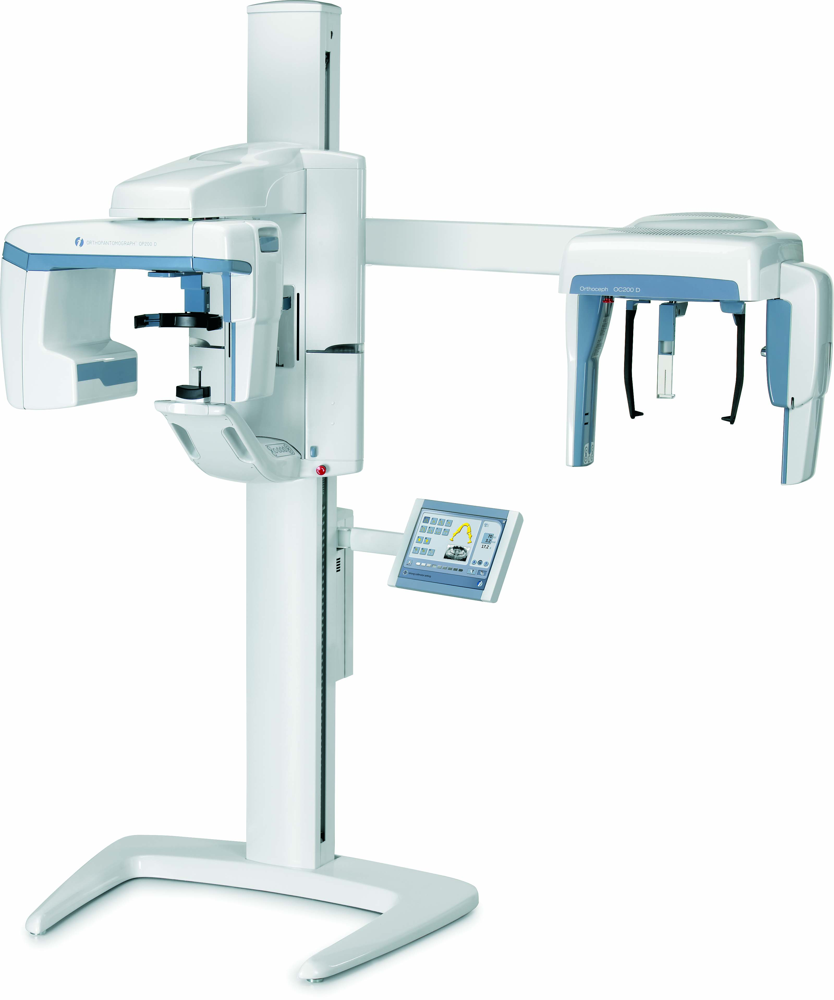
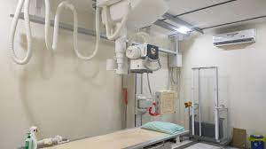
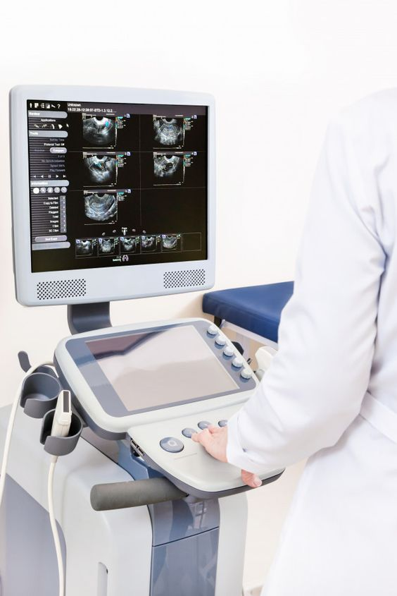

Medical Check Up
Kesehatan Mahal Harganya, Tetapi Ketika Sakit Bisa Lebih Mahal Lagi Biayanya. Karena Itu, Mencegah Lebih Baik Daripada....
Pelayanan Radiologi RS Healvibe
Latar Belakang
Kegiatan pelayanan radiologi di RS Healvibe bertujuan untuk membantu klinisi dalam menilai adanya kelainan/lesi patologis yang mencakup seluruh bidang kedokteran, terutama bedah, penyakit dalam, anak/pediatrik, kebidanan & kandungan, pulmonologi, kardiologi, telinga, mata, dan sebagainya. Adapun instrumen/modalitas pemeriksaan radiologi yang tersedia mulai dari radiologi konvensional, CT scan, dan USG yang penggunaannya sesuai indikasi dan permintaan dari klinisi.
1. CT Scan 128 Slices (CT Revolution Evo)

Radiologi RS Healvibe memiliki CT Scan 128 slice yang mampu menghasilkan gambar beresolusi yang tinggi dengan waktu pemeriksaan yang lebih cepat. Selain bisa mengevaluasi berbagai struktur organ seperti abdomen, thoraks/dada, kepala-leher dan tungkai, Alat ini juga dapat digunakan untuk memvisualisasikan pembuluh darah Otak, jantung dan pembuluh darah perifier serta mampu melakukan rekonstruksi secara 3D.
2. Panoramik OC 200D
Panoramik adalah pemeriksaan yang biasa dilakukan oleh dokter gigi atau dokter spesialis bedah mulut dalam menegakkan diagnosis penyakit pada pasiennya. Pemeriksaan panoramik merupakan pemeriksaan non invasif dan merupakan prosedur ekstraoral sederhana yang menggambarkan daerah rahang atas dan rahang bawah pada satu film. Pemeriksaan ini memberikan informasi pada dokter mengenai sinus maxillary, posisi gigi, dan kelainan tulang di daerah mulut, untuk merancang terapi atau pengobatan pada pasien gigi dan mulut.
3. X Ray Toshiba MRAD-32S
Pemeriksaan radiologi konvensional adalah modalitas imejing sederhana yang menggunakan sinar Roentgen (X-ray). Pemeriksaan ini dapat dilakukan untuk mengevaluasi berbagai organ tubuh, antara lain kepala, gigi (panoramic), toraks, abdomen, serta tulang-tulang pada seluruh bagian tubuh.
Pemeriksaan radiografi dengan kontras, yaitu pemeriksaan sederhana menggunakan sinar Roentgen (X-ray) disertai pemberian obat kontras untuk mengevaluasi kelainan yang ada, misalnya pemeriksaan saluran kemih (urografi intravena).
4. USG (ULTRASONOGRAFI)
Pemeriksaan ultrasonografi adalah teknik pencitraan organ tubuh dengan menggunakan gelombang suara ultra. Radiologi RS Universitas Udayana dilengkapi dengan alat USG terbaru dengan spesifikasi alat yang canggih, sehingga mampu untuk melakukan pemeriksaan berbagai sistem organ seperti, abdomen lengkap, traktus urinarius, payudara, testis, leher, muskuloskeletal, dan pembuluh darah. Selain itu juga dapat digunakan sebagai penuntun biopsi.